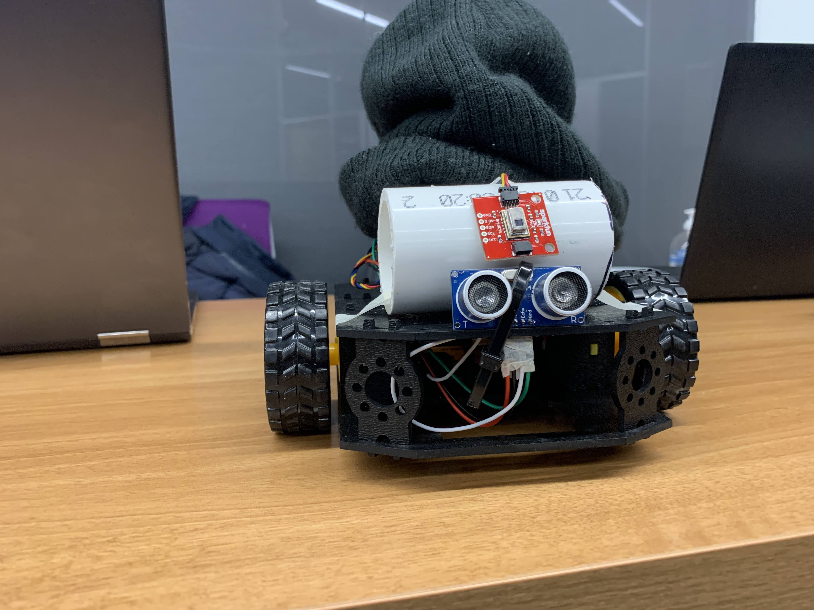
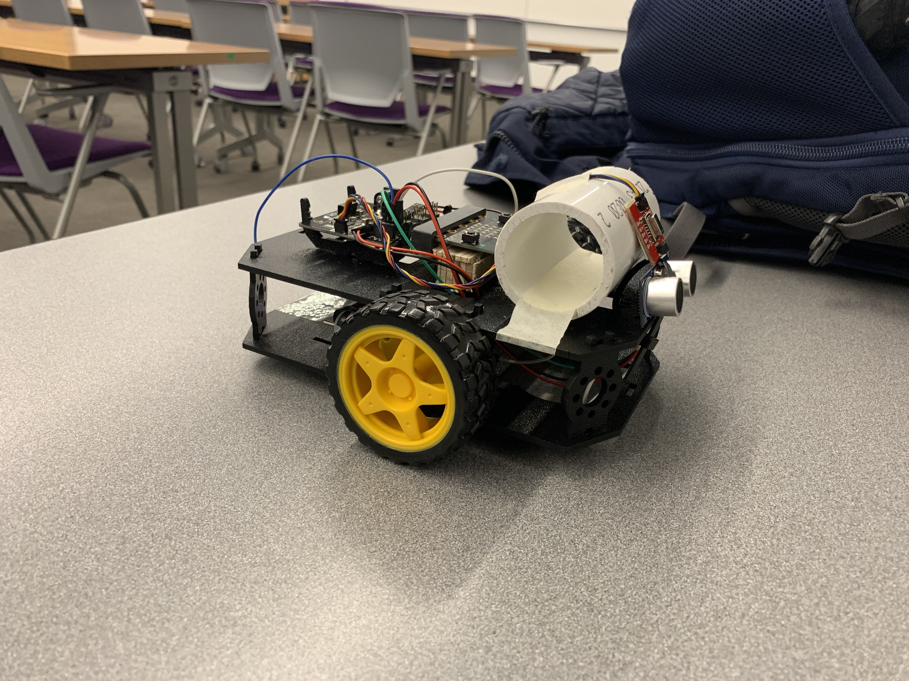

Elf-Bot
The Elf-Bot was created as part of my final project for my Microprocessor System Design class where the goal of the project was to put together everything we learned about the design and use of microcontroller-based systems
The Elf-Bot is a Micro:Bit based robot that follows people using Grid-EYE Infrared sensors and has object detection using an HC-SR04 Ultrasonic Sensor. The Micro:Bit runs on an nRF52 microcontroller and all firmware is written in C.
This project was tackled by creating numerous driver files for each component then utilizing them in the main.c file, where the actual sensing is done.

Elf-bot

Side view of Elf-bot

The Elf-Bot in action